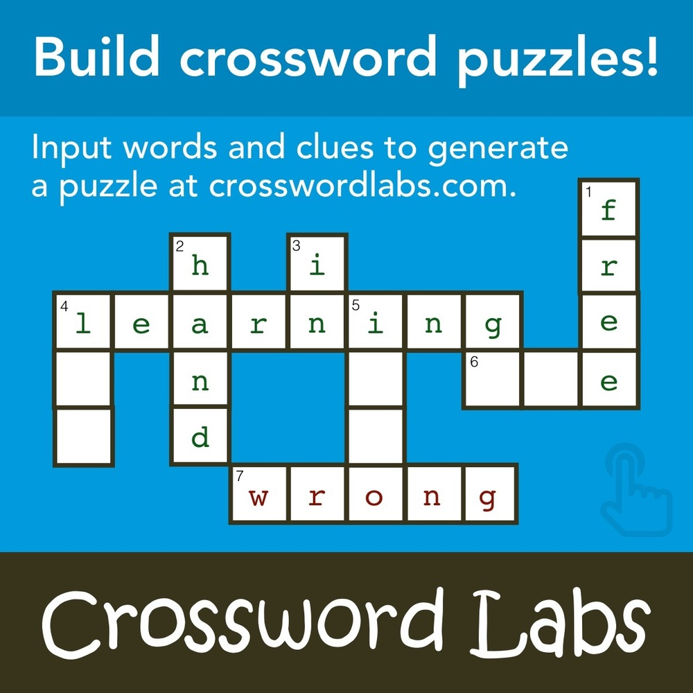
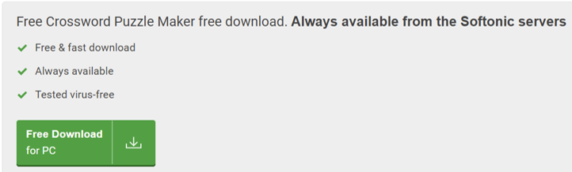

Ce este Crossword puzzle?
Cuvintele încrucișate reprezintă una dintre cele mai răspândite variante de exerciții mentale din lume. În România, rebus-urile și integramele sunt publicate constant, atât în cotidiane de top, cât și în reviste specializate dedicate acestor tipuri de probleme.
Crossword Labs este un creator de cuvinte încrucișate. Este cel mai simplu și rapid mod de a construi, tipări, partaja și rezolva puzzle-uri online. Și este gratuit de utilizat! Fără reclame, fără filigrane și nu este necesară înregistrarea.Peste un milion de cuvinte încrucișate realizate!
Unde găsim aplicația?
https://en.softonic.com/downloads/crossword-puzzle-free
Varianta online
https://crosswordlabs.com/
Caracteristici de joc
- Rapid, simplu și gratuit de utilizat cu adresă URL de cuvinte încrucișate care poate fi partajată
- Funcționează pe tablete și telefoane
- Imprimați/exportați cuvintele încrucișate în PDF sau Microsoft Word
- Descărcați cuvintele încrucișate ca imagine și exportați în SVG pentru personalizare completă
Cum se descarcă?

Cum utilizăm Crossword?
←
Pașii care trebuie urmați pentru a crea un puzzle
- Decideți dimensiunea grilei.
- Faceți o listă de cuvinte pentru cuvintele încrucișate.
- Așezați cuvintele într-un format de grilă.
- Numerotează pătratul de început pentru fiecare cuvânt. Începeți din colțul din stânga sus al puzzle-ului și împărțiți cuvintele fie ele pe verticală sau pe orizontală, astfel încât să aveți un „1 în jos” și un „1 lateral”. Acest lucru poate fi, de asemenea, destul de uluitor, iar mulți oameni preferă să folosească software-ul în loc să facă totul manual.
- Creați o copie a cuvintelor încrucișate. De data aceasta, pătratul de început pentru fiecare cuvânt ar trebui să fie numerotat, dar pătratele în sine ar trebui să fie goale. Dacă vă creați puzzle-ul manual, acest lucru va necesita un pic mai mult de muncă, dar dacă utilizați un creator de cuvinte încrucișate, ar trebui să fie făcut pentru dvs. Pune deoparte puzzle-ul completat pentru a fi folosit ca cheie de răspuns. Puteți face câte copii aveți nevoie.